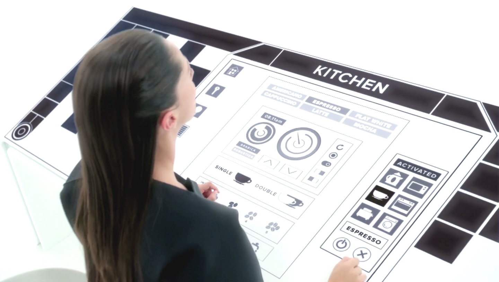
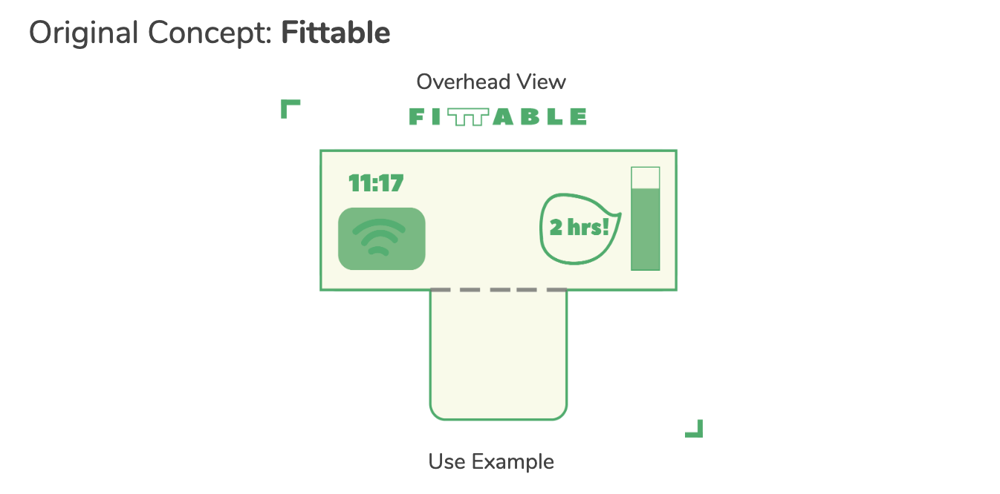
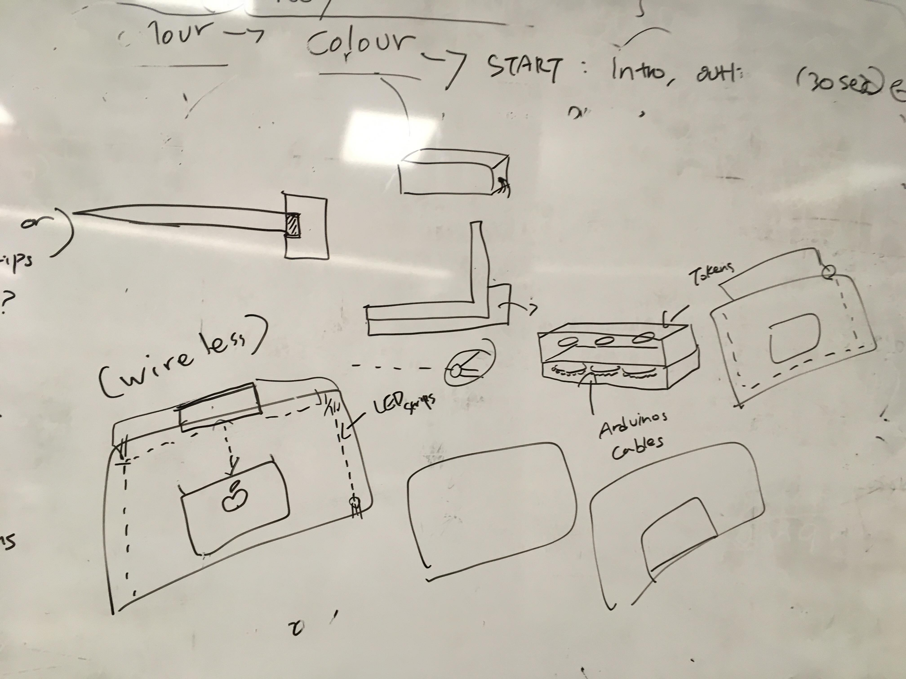
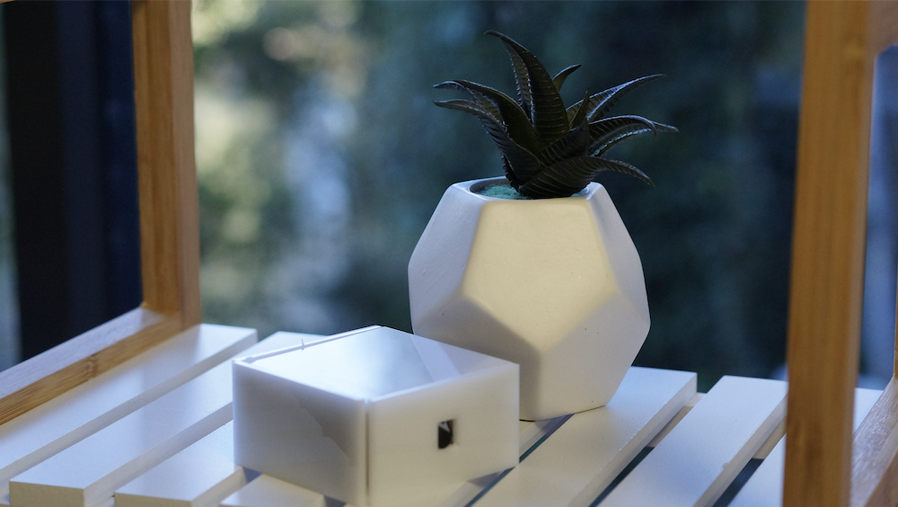
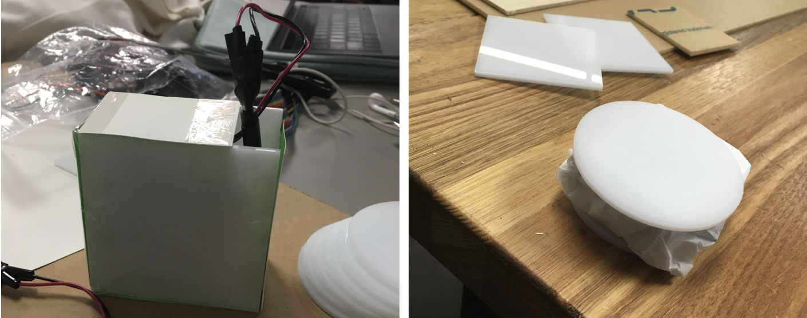
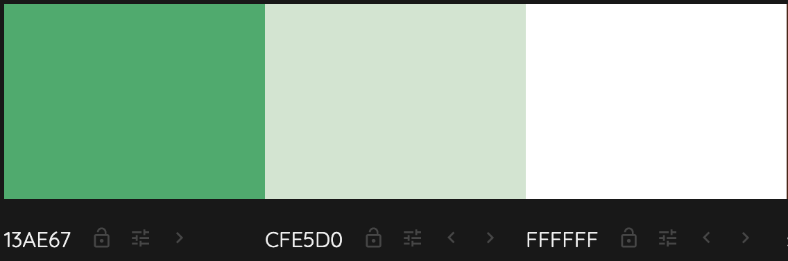
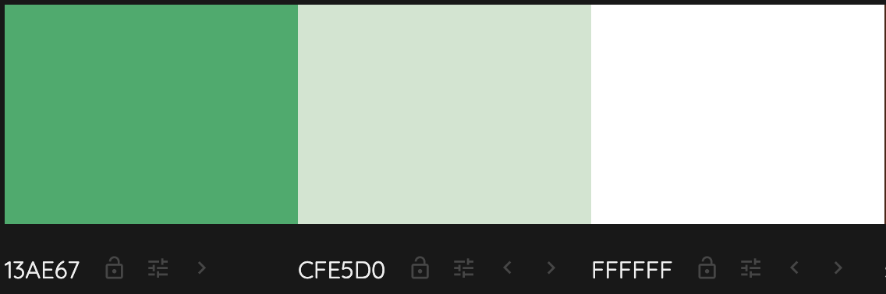

Team Habits is a team which every member has a UX design skillset. Our team divided the workload based on our individual strengths and characteristics. Because most of our team members were not familiar with programming and hand crafting, we all collaborated in construction of the product together despite of our role allocations. I was allocated as UI/UX Designer and Content creator with other team member, Rebecca. Here are the official role allocations. The links below will take you to individual blog posts written by each team member:
India Anderson: UX Designer/Development and Communications Lead
Rebecca Choeung: UI/UX Designer/Content Creator
Elliot Kim: UI/UX Designer/Content Creator
Bruce Zhu: Technical Lead
My Contributions:
Idea Generation
 Once our team decided to explore the posture as our project theme, I came up with this idea of a Smart desk, that detects your leg-crossing habits and reminds you to sit up straight while you study. The idea was inspired by a Netflix series called ‘Black Mirror’. In the White Christmas episode, a character uses a smart table to control anything including lights and toaster in her household using the touch screen. Smart desk was not something that is actively developing in the industry and I thought having a display on your own table would look so cool. By extending the idea of standing desk, I thought this could be a relevant concept as sitting on your desk for long amount time has significant impact on your back and neck bone health. I designed the initial UI of the product including the activity meter and real time notifications. The concept kept being modified and evolved through the project and ended up with the form of Smart table-top and tokens.
Product Design and Construction
  
The part I participated the most was the tokens. The original design of tokens were basically a game tokens that are slightly thicker than Oreos to store neopixels inside. However, we also had to store the ESP32 as well as batteries so the round-shaped acrylics were not sufficient to fit all these items inside. Hence, I had to redesign and make several prototypes before making the final version. Using square-shaped acrylic pieces, cardboards and coated paper, I made versions of square-shaped tokens. Since the lines associated with battery and boards would not fit inside the token, I left tiny hole at the top to let them go. After I checked the prototypes look compact and decent enough, I built more polished version of them using additional acrylic pieces and hot glue. The outcome looked pretty good and all the neopixel rings, batteries and ESP32 fitted inside perfectly.
I also participated in making the wooden box that sits on the tabletop. The box had to be big and wide enough to fit within the tabletop and able to store all the arduino cables and boards inside as well as the tokens. Based on the design, me and Rebecca built a long box using 10cmX10cm wood pieces and hot glue gun. We then had to cut another wood piece to create a layer that fits inside the box, so we can separate the arduino cables and tokens. In pair, we cut 1~2mm off the wood piece with saw. It was not a complicated task but definitely a time-consuming since it was very tiny amount that we had to cut. After that we had to cut additional parts off the layer, to fit the PIR motion sensor and LCD screens. The last step for the box was to paint with white spray paints which matches the colour of the table top and tokens. If you want to know more about the construction process, please refer to my blog posts from week 10 - 13.
Graphic Design & Product Branding

 

I contributed a large portion of the graphic design and product branding work for this project. Firstly I designed our project logo, a simple typeface with a connected Ts looking like a table, to reflect the central theme of the project. I also designed a team logo, as well as the exhibition logo which are included in most of our supporting materials and video. For the brand image, I set the colour scheme to be green and white which represents energy, safety and positivity. This colour choice was relevant to our concept aims to promote healthy study habits. These colours were used in every single deliverables for this project as well as in installation setting at the exhibition. The product itself is also painted in white, using green as the main light. In addition, throughout the project I created iterative sketches to show the progression of the concept design wise. These sketches are shown as part of the Process discussion.
I created most of the supporting materials myself using Adobe Illustrator. I created the main A2 conference poster and every single illustration on this poster were created me and Rebecca; we did not use any third party icons or illustrations. I also created the double-sided A5 flyers to promote Fittable and its usage. In addition, I created the business cards to promote our team. I tried keep the designs as consistent as possible by using same colour scheme and typefaces (Object Sans, Peace Sans). I believe my contribution definitely built the brand image of Fittable, giving people positive, fresh and healthy impression.
Reflection on Individual Contribution
Overall, I feel that our whole team pulled our individual weight to finish the project successfully. Even though most of our team members (including myself) had handicaps of not being familiar with programming and hand crafting, we managed to finish our exhibition successfully and finish every single assessment on time. For my part, I was really glad to be working in areas that I feel confident of, and that I was able to challenge myself through the construction of Fittable. It was a great experience to work with peer designer to share opinions and help each other. That said, I do wish that I could have learnt improve my coding ability. Since our team allocated individual role from the beginning, it made difficult for team members to handover or switch their tasks in the middle. However, we have been documenting what we individually have done on our team document and kept updating it day by day to ensure every single member knows what we are doing and how that works for our project. This team strategy made me feel much confident understanding the mechanism of electronics including Arduinos, ESP32 Neopixels.